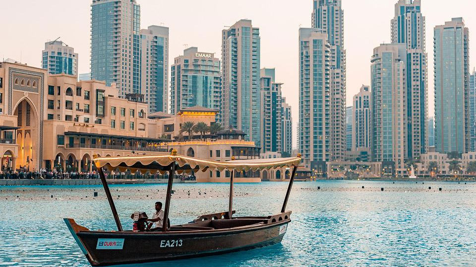

LONDON
As the “capital of capitals”—still waist-deep in an opaque pandemic slurry—negotiates the uncharted, perilous terrain of a post-Brexit world, London continues to reign the planet’s best cities for the sixth year running. Its position at the top, however, has never been more tenuous.

PARIS
Paris attacked the pandemic not only with its doctors and health-care workers, but also with its urban planners. For all the talk of learning from the pandemic, one city appears to be going all-in on the hard lessons it gave and their application to molecular urban change.

NEW YORK
If New York City forgot about how bad life can get for its citizenry , the past 18 months were a hellish reminder. The greatest city in America—lauded and crowned in our ranking for the past six years and in countless others for many more—was a ghastly reminder during the pandemic.

DUBAI
An alluring blend of over-the-top experiences, Arab heritage and luxury shopping, Dubai is so over the pandemic. Dubai is a city of superlatives: you can ride the elevator to the top of the world ’s tallest building for a bird’s-eye view, bet on the ponies at the world’s richest.
